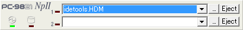

ツールウィンドウとは、フロッピーディスクの入れ換えを容易に行なうための機能です。
この機能を使用するためには、エミュレーションウィンドウのシステムメニューより Tool Windowを選択します。

| コントロール | 機能 |
|---|---|
| ドロップダウンリスト | 挿入されているフロッピーディスクが表示されています。 リストには過去８ファイルが記録されており、最近使ったファイルを容易に選択できます。 またディスクイメージファイルをドロップして選択することもできます。 |
| ...ボタン | ディスクイメージを挿入します。 |
| Ejectボタン | ディスクイメージを取り出します。 |
システムメニュー・ポップアップメニュー
| メニュー | 機能 | |
|---|---|---|
| Skin | Select Skin | ツールウィンドウのスキンを選択します。 |
| <Base Skin> | 標準のスキンを呼び出します。 | |
| Close | ツールウィンドウを閉じます。 | |